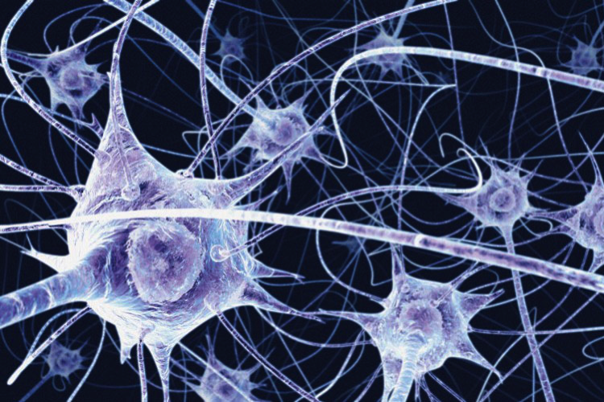
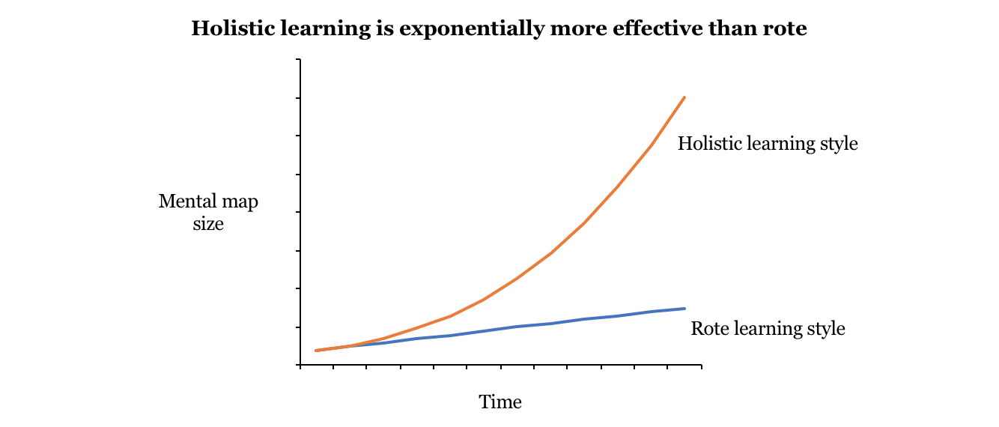

Imagine being able to speak on any general knowledge topic. Solve a problem you’ve never seen before. Ace a test you hadn’t studied for. And do all this without any rote preparation.
Amazing, but possible! To see how, let’s take a look at how the human brain works. The brain is made up of billions of interconnected neurons, like one giant web. Information is passed between the neurons via ‘bridges’ that connect them. When you learn something new, new bridges are made, forming new patterns in the web. Over time, as you recall and rehearse this new thought or fact, the associated bridges are strengthened, and you get even faster at recalling it. Like exercising a muscle, the more you use a bridge, the bigger it gets, and the bridges you use every day grow to become highways.
You can think of this web as giant mental mind-map of knowledge in your brain, like a big snowball or a tree with many branches. Whenever you come across a new piece of information you’re studying, you can integrate it into your existing mental map like a giant snowball picking up a small bit of snow, or a tree naturally growing new branches – a learning style known as ‘holistic learning’.
However, integrating new knowledge in this way is not as intuitive as it sounds, as the common reaction is to do the opposite and try to force the new piece of information into our brains by rote. Learning by rote is like grafting a branch onto a tree instead of letting the tree naturally grow a branch: it is a painful process and may not stick very well.
A better way to add new information into our existing mental maps is to first find common ground between the new information and what we already know.
For example, in your class, you may need to study the fact that ‘hot air rises and cold air sinks’ and not confuse it with the other way around. You can recall seeing hot air balloons on early mornings – when it’s cold. You can also ponder why heaters in houses are usually on the floor rather than the ceiling: because hot air doesn’t sink downwards. You could even do some research and find out the scientific reasons behind this phenomenon. By linking this new fact to what you already know (hot air balloons) and creating new bridges from it to new perspectives (house heaters, scientific reasons), you are much more likely to remember the fact and also enjoy the learning process.
The more neural connections you make to the new piece of information, the more likely you can recall it, and the more useful a mental map you have as a basis for future learning. If you make bridges to the new piece of information from multiple different parts of your mental map, any of those parts can serve as memory triggers. In contrast, rote doesn’t link new information to any part of your mental map at all.
Integrating new knowledge into your mental map requires effort: every time you come across a new fact, you have to pause for a bit and deliberately make bridges to your web of existing knowledge. Yet the benefits in recall ability and your future capability to learn far outweigh the effort needed.
There is a small caveat: holistic learning works best for subjects with some kind of underlying theory (such as economics, maths and engineering) and not so easily for subjects that have lots of unrelated facts (such as anatomy, case law and the humanities) which are still mainly learnt by rote. For such subjects, techniques like spaced repetition are helpful. However, holistic learning is still more effective than rote in these subjects if you can construct an underlying narrative (such as with law, history and other humanities), use mnemonics (such as to memorise a list of names) and find links between the facts you are studying.
If you are interested to learn more, I recommend reading productivity blogger Scott Young’s eBook on holistic learning (link here). Young also expands on more methods to integrate new knowledge.
As you continue to build on your snowball, you won’t be working with a disjoint set of facts, but rather a coherent foundational framework to process any questions, tests, problems or new information that life may throw at you.